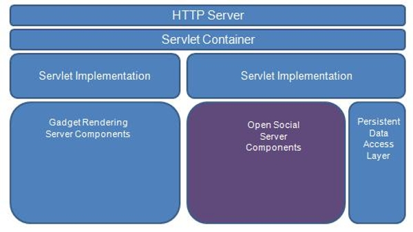
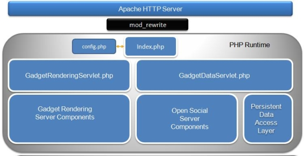
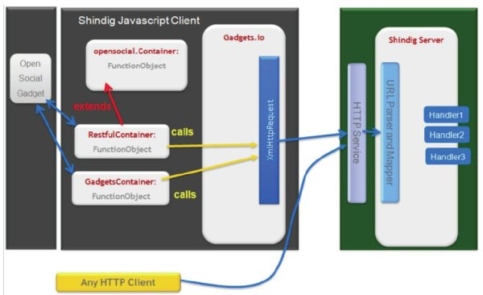

Introduction
Apache Shindig, a word meaning party, was originally started by Google in 2007 as a
reference container for hosting OpenSocial compatible widgets in any website.
Originally a port of Google's iGoogle gadget container, with Brian McCallister's PHP
code, Apache Shindig threw off it's egg shell, and showed that Google was serious about
making OpenSocial accessible to a larger number of sites. Since December 2007,
Apache Shindig is now an Apache project.
Apache Shindig's objectives
Apache Shindig's primary goal is to provide infrastructure for those wishing to host
OpenSocial apps on their websites. Another goal of Apache Shindig is to be language neutral
and cover multiple languages.
Currently, Java and PHP versions are availables and supported.
Apache Shindig Components
Server Side
The Java and PHP version of Apache Shindig have 3 major server side components:
- Persistent Data Loading Mechanism;
- Gadget Rendering Infrastructure;
- OpenSocial server side implementation.

Components of Apache Shindig Java Server Side container

Components of Apache Shindig PHP Server Side container
Client Side
The Javascript features are:
- Gadget container (gadget.js), fully opensocial gadget compliant;
- OpenSocial container;
- JSON, Restful container and Caja support.

Put It Together: OpenSocial Flow
The following is a typical flow to get a list of Friends.
Server Side Flow
- Call JsonRpcServlet;
- Get the appropriate handler;
- Get the JSON object from the DB;
- Populate responses into a list;
- Return to the client.
In the case of the REST use, the flow will be:
- Call DataServiceServlet;
- Get the appropriate converter;
- Get the handler;
- Get the JSON object from the DB;
- Return to the client.
Client Side Flow
- Create request object;
- Populate request parameters;
- Send the request.
OpenSocial APIs
Apache Shindig implements several OpenSocial APIs:
- OpenSocial REST: for server to server communication
- OpenSocial JSON-RPC: for gadget to server communication
- Javascript: for gadgets
OpenSocial REST
There are four types of REST services which can be exposed by Apache Shindig:
people, activities, appdata and groups.There are URI
Templates defined for each type of service.
For instance, http://localhost:8080/social/rest/people/john.doe
| Type |
Spec. |
URI-Template |
|
People
|
Spec.
|
- /social/rest/people/{guid}/@all
- Collection of all people connected to user {guid}
- /social/rest/people/{guid}/@all
- Collection of all people connected to user {guid}
- /social/rest/people/{guid}/@friends
- Collection of all friends of user {guid}; subset of @all
- /social/rest/people/{guid}/{groupid}
- Collection of all people connected to user {guid} in group
{groupid}
- /social/rest/people/{guid}/@all/{pid}
- Individual person record for a specific person known to
{guid}; shows {guid}'s view of {pid}.
- /social/rest/people/{guid}/@self
- Profile record for user {guid}
- /social/rest/people/@me/@self
- Profile record for requestor
|
|
Activities
|
Spec.
|
- /social/rest/activities/{guid}/@self
- Collection of activities generated by given user
- /social/rest/activities/{guid}/@friends
- Collection of activities for friends of the given user
{guid}
- /social/rest/activities/{guid}/{groupid}
- Collection of activities for people in group {groupid}
belonging to given user {uid}
- /social/rest/activities/{guid}/@self/{activityid}
- Individual activity resource; usually discovered from
collection
|
|
Appdata
|
Spec.
|
- /social/rest/appdata/{guid}/@self/{appid}
- All app data for user {guid}, app {appid}
- /social/rest/appdata/{guid}/@friends/{appid}
- All app data for friends of user {guid} and app {appid};
read-only (only GET and HEAD supported)}
- /social/rest/appdata/{guid}/@self/{appid}?fields=count
- Just the count field for user {guid}, app {appid}
|
|
Group
|
Spec.
|
- /social/rest/groups/{guid}
- Collection of groups associated with user {guid}
- /social/rest/groups/{guid}/{groupid}
- Individual group {groupid} associated with user {guid}
|
OpenSocial JSON-RPC
Apache Shindig implements all required RPC services: People, Activities,
Appdata, Messages, Albums, MediaItems and System.
Note: Apache Shindig doesn't implement all methods defined in OpenSocial
RPC Protocol, Section 2, Services but these missing methods are not
required to be OpenSocial compliant.
| Type |
Spec. |
Service method |
|
People
|
Spec.
|
- people.get
- Retrieve a single person or list of opensocial.Person
objects.
- people.supportedFields
- List the supported fields for this service.
|
|
Activities
|
Spec.
|
- activities.create
- Support creating opensocial.Activity objects as the targets
of a relationship with the specified user.
- activities.get
- Retrieve a one or list of opensocial.Activity objects.
- activities.update
- Support updating opensocial.Activity objects as the targets
of a relationship with the specified user.
- activities.delete
- Support removing the relationship between an
opensocial.Activity and the specified user.
- activities.supportedFields
- List the supported fields for this service.
|
|
Appdata
|
Spec.
|
- appdata.create
- Support creating key-value pairs in a user appdata.Not
defined in the spec.
- appdata.get
- Retrieve a map of key-value pairs for the list of specified
keys.
- appdata.update
- Add or replace key-value pairs stored in a users appdata
with the key-vaues in the data parameter.
- appdata.delete
- Remove the specifed keys from a users appdata and returned
the values associated with those removed keys.
|
|
Messages
|
Spec.
|
- messages.create
- Support creating opensocial.Message objects. Not defined
in the spec.
- messages.get
- etrieve a one or list of opensocial.Message objects. Not
defined in the spec.
- messages.modify
- Support updating opensocial.ActivityMessage objects. Not
defined in the spec.
- messages.delete
- Support removing opensocial.ActivityMessage objects. Not
defined in the spec.
|
|
System
|
Spec.
|
- system.listMethods
- Returns an array of all methods supported by the endpoint
including the system methods.
- messages.methodSignatures
- Returns a method signature describing the types of the
parameters. Not implemented yet.
- messages.methodHelp
- Returns a textual description of the operation identified by
the methodName parameter. Not implemented yet.
|